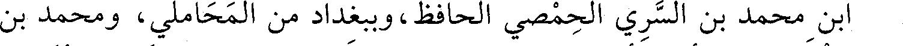
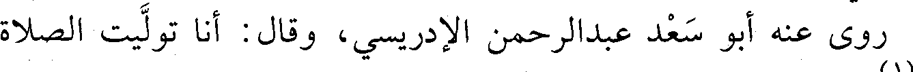
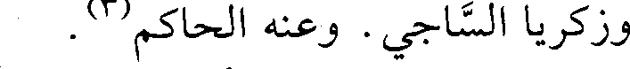
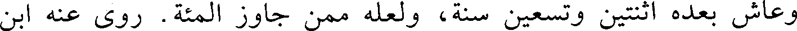
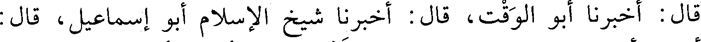
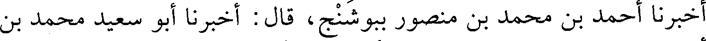
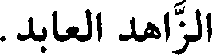
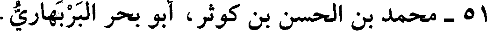

File: 000410.gt.txt (if the image is defective, simply delete all Arabic text and the line will be excluded)

الدمشقي الحافظ، أخو أبي الحسن علي.
File: 000411.gt.txt (if the image is defective, simply delete all Arabic text and the line will be excluded)

سمع أحمد بن عمير بن جوصا، ومحمد بن خريم، وعلي بن محمد
File: 000412.gt.txt (if the image is defective, simply delete all Arabic text and the line will be excluded)
ابن كاس، وأبا الجهم بن طلاب، وأبا الدحداح أحمد بن محمد، وعبدالله
File: 000413.gt.txt (if the image is defective, simply delete all Arabic text and the line will be excluded)

بن محمد بن السري الحمصي الحافظ، وببغداد من المحاملي، ومحمد بن
File: 000414.gt.txt (if the image is defective, simply delete all Arabic text and the line will be excluded)

مخلد. وعنه أخوه أبو الحسن، ومكي بن الغمر، ومحمد بن عوف المزني،
File: 000415.gt.txt (if the image is defective, simply delete all Arabic text and the line will be excluded)

وجماعة.
File: 000438.gt.txt (if the image is defective, simply delete all Arabic text and the line will be excluded)

خليفة، وعبدان، وعبدالله بن ناجية، وعبدالله بن سلم المقدسي، وابن قتيبة
File: 000439.gt.txt (if the image is defective, simply delete all Arabic text and the line will be excluded)

العسقلاني. ودرس الفقه بمصر على منصور بن إسماعيل الفقيه.
File: 000440.gt.txt (if the image is defective, simply delete all Arabic text and the line will be excluded)

روي عنه أبو سعد عبدالرحمن الإدريسي، وقال: أنا توليت الصلاة
File: 000441.gt.txt (if the image is defective, simply delete all Arabic text and the line will be excluded)

عليه(1) .
File: 000442.gt.txt (if the image is defective, simply delete all Arabic text and the line will be excluded)

44 - محمد بن أحمد بن خالد بن يزيد القرطبي، أبو بكر، ابن
File: 000443.gt.txt (if the image is defective, simply delete all Arabic text and the line will be excluded)

الخفاف مصنف كتاب «فضل العلم» .
File: 000444.gt.txt (if the image is defective, simply delete all Arabic text and the line will be excluded)

له رواية عن أبيه وغيره(2) .
File: 000445.gt.txt (if the image is defective, simply delete all Arabic text and the line will be excluded)

45 - محمد بن أحمد بن علي بن شاهويه، أبو بكر الفارسي
File: 000446.gt.txt (if the image is defective, simply delete all Arabic text and the line will be excluded)

الفقيه الشافعي، قاضي بلاد فارس.
File: 000447.gt.txt (if the image is defective, simply delete all Arabic text and the line will be excluded)

بعيدة تفرد بها.
File: 000448.gt.txt (if the image is defective, simply delete all Arabic text and the line will be excluded)

وزكريا الساجي. وعنه الحاكم(3) .
File: 000449.gt.txt (if the image is defective, simply delete all Arabic text and the line will be excluded)

46 - محمد بن أحمد بن كثير بن ديسم، أبو سعيد الهروي.
File: 000450.gt.txt (if the image is defective, simply delete all Arabic text and the line will be excluded)

سمع أحمد بن مقدام الهروي، وهو آخر من حدث في الدنيا عنه،
File: 000451.gt.txt (if the image is defective, simply delete all Arabic text and the line will be excluded)

وعاش بعده اثنتين وتسعين سنة، ولعله ممن جاوز المئة. روى عنه ابن
File: 000452.gt.txt (if the image is defective, simply delete all Arabic text and the line will be excluded)

العالي، وغيره، وتوفي في جمادى الآخرة.
File: 000453.gt.txt (if the image is defective, simply delete all Arabic text and the line will be excluded)

قرأت على أبي الحسن الهاشمي : أخبركم أبو الحسن بن روزبه،
File: 000454.gt.txt (if the image is defective, simply delete all Arabic text and the line will be excluded)

قال : أخبرنا أبو الوقت، قال : أخبرنا شيخ الإسلام أبو إسماعيل، قال:
File: 000455.gt.txt (if the image is defective, simply delete all Arabic text and the line will be excluded)

أخبرنا أحمد بن محمد بن منصور ببوشنج، قال : أخبرنا أبو سعيد محمد بن
File: 000456.gt.txt (if the image is defective, simply delete all Arabic text and the line will be excluded)

أحمد بن كثير بهراة، قال : حدثنا أبو جعفر أحمد بن مقدام الهروي، قال:
File: 000457.gt.txt (if the image is defective, simply delete all Arabic text and the line will be excluded)

حدثنا أبو نعيم، قال : حدثنا سلمة بن وردان، قال : سمعت أنس بن مالك
File: 000458.gt.txt (if the image is defective, simply delete all Arabic text and the line will be excluded)

عن رسول الله صعلم، قال : « من ترك الكذب وهو باطل بني له في رياض
File: 000459.gt.txt (if the image is defective, simply delete all Arabic text and the line will be excluded)

الجنة. ومن ترك المراء وهو محق بني له في وسطها. ومن حسن خلقه بني
File: 000460.gt.txt (if the image is defective, simply delete all Arabic text and the line will be excluded)

له في أعلاها»(1) .
File: 000461.gt.txt (if the image is defective, simply delete all Arabic text and the line will be excluded)

قال شيخ الإسلام في كتاب «ذم الكلام»: هذا الحديث أعلى حديث
File: 000462.gt.txt (if the image is defective, simply delete all Arabic text and the line will be excluded)

عندي(2) .
File: 000463.gt.txt (if the image is defective, simply delete all Arabic text and the line will be excluded)

47 - محمد بن أحمد بن محمد بن طالب بن أيمن، أبو عبدالله
File: 000464.gt.txt (if the image is defective, simply delete all Arabic text and the line will be excluded)

القيسي المؤدب القبري.
File: 000465.gt.txt (if the image is defective, simply delete all Arabic text and the line will be excluded)

رحل وسمع بمصر من أبي قتيبة بن الفضل، وأبي محمد بن الورد،
File: 000466.gt.txt (if the image is defective, simply delete all Arabic text and the line will be excluded)

والعباس الرافقي. وسمع الناس منه كثيرا. وقبرة: مدينة صغيرة بالأندلس (3) .
File: 000467.gt.txt (if the image is defective, simply delete all Arabic text and the line will be excluded)

48 - محمد بن أحمد بن منبه السمسار، أبو أحمد النيسابوري.
File: 000468.gt.txt (if the image is defective, simply delete all Arabic text and the line will be excluded)

روى عن مطين. وعنه الحاكم وغيره.
File: 000469.gt.txt (if the image is defective, simply delete all Arabic text and the line will be excluded)

49 - محمد بن إبراهيم بن حسنويه، أبو بكر النيسابوري الوراق
File: 000470.gt.txt (if the image is defective, simply delete all Arabic text and the line will be excluded)

الزاهد العابد.
File: 000471.gt.txt (if the image is defective, simply delete all Arabic text and the line will be excluded)

سمع محمد بن إبراهيم البوشنجي، وجعفر بن سوار. وعنه الحاكم،
File: 000472.gt.txt (if the image is defective, simply delete all Arabic text and the line will be excluded)

وقال : عاش خمسا وتسعين سنة، وبكى من خشية الله حتى عمي.
File: 000473.gt.txt (if the image is defective, simply delete all Arabic text and the line will be excluded)

50 - محمد بن إبراهيم بن إسحاق بن أبروية، أبو أحمد
File: 000474.gt.txt (if the image is defective, simply delete all Arabic text and the line will be excluded)

الإستراباذي.
File: 000475.gt.txt (if the image is defective, simply delete all Arabic text and the line will be excluded)

فاضل ثقة عابد، سمع الكثير ورحل، وحدث عن محمد بن عبد بن
File: 000476.gt.txt (if the image is defective, simply delete all Arabic text and the line will be excluded)

عامر السمرقندي، ومحمد بن يزداد، والضحاك بن الحسين، وأحمد بن
File: 000477.gt.txt (if the image is defective, simply delete all Arabic text and the line will be excluded)

حفص السعدي، وجاوز التسعين.
File: 000478.gt.txt (if the image is defective, simply delete all Arabic text and the line will be excluded)

روى عنه أبو سعد الإدريسي، وقال : توفي فجاءة.
File: 000479.gt.txt (if the image is defective, simply delete all Arabic text and the line will be excluded)

51 - محمد بن الحسن بن كوثر، أبو بحر البربهاري.
File: 000480.gt.txt (if the image is defective, simply delete all Arabic text and the line will be excluded)

بغدادي معمر، حدث عن محمد بن الفرج الأزرق، ومحمد بن يونس
File: 000481.gt.txt (if the image is defective, simply delete all Arabic text and the line will be excluded)

في مذهب مالك» ، وكتاب «الفتيا» وكتاب «تاريخ الأندلس» ، و«تاريخ